|
Roda JC - Excelsior (2-0) 7 april 2007
|
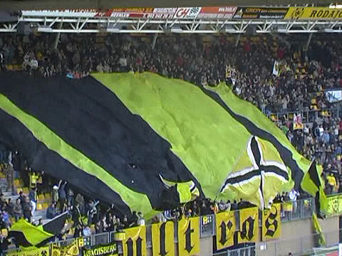
Het grote doek zeilt weer eens over de west-tribune.
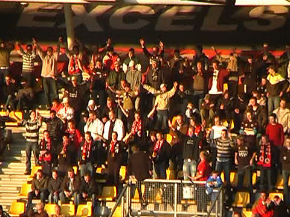
Tamelijk veel Excelsiorfans, een gevolg van een sponsoractie die de Kralingers
vervoer en entree voor 15 euro bood.
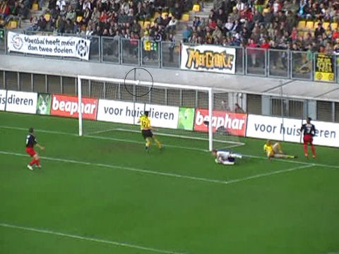
Roda heeft vrijwel continue balbezit maar af en toe is er een tegenstoot van
Excelsior zoals hier waar Slory op de lat schiet.
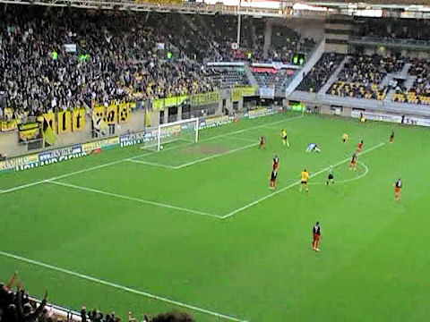
Nadat doelman Graafland reeds de nodige reddingen heeft verricht schiet Cissé
hier
op de paal. De bal wil er gewoon niet in...
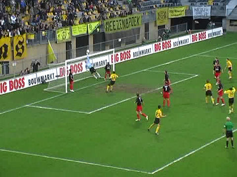
Roda krijgt ongewoon veel corners die ook nog eens af en toe gevaarlijk zijn
zoals
hier waar Graafland weer eens redding brengt voor Excelsior.
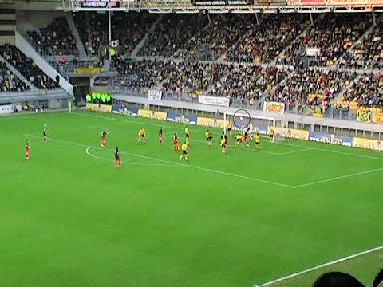
Uit een corner kopt Luyckx op de lat.
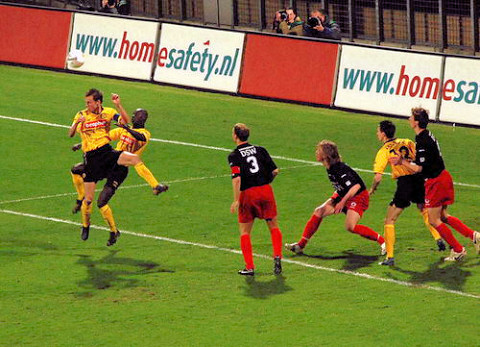
Kah scoort met een mooie omhaal 1-0, (48').
Foto:
http://www.sv-online.info
Filmpje: YouTube
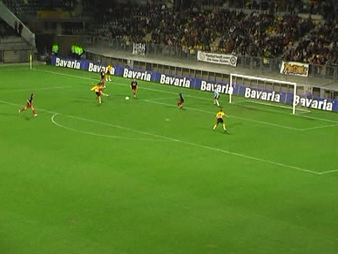
Schot van Oper... 2-0, (90').
Filmpje YouTube
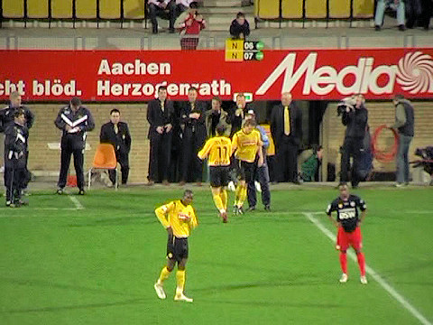
Hij krijgt meteen een publiekswissel.
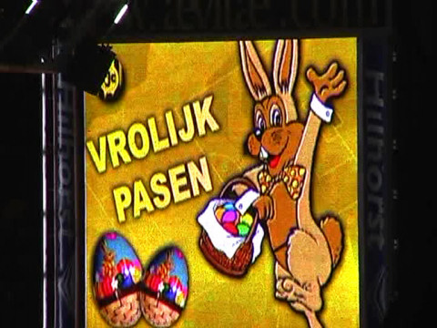
Dat lukt wel maar het is jammer dat concurrent NEC met 2-1 van PSV won.
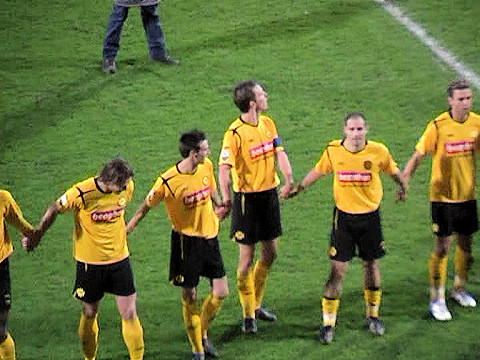
Aanvoerder Saeijs regelt de publiekswave. Even wachten op Kah en Kujo.
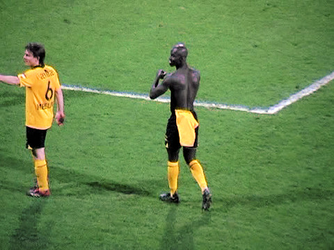
De gebruikelijke pose van Kah.
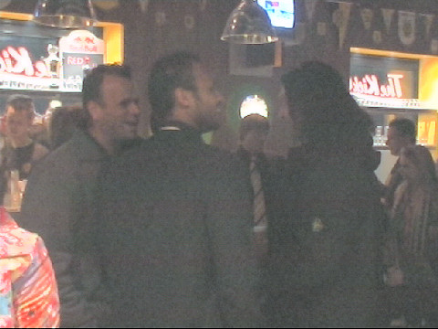
Humphrey Rudge tussen enkele old-school supporters. Van de spelers kwamen
ook Ger Senden, Kevin van Dessel en Bram Castro.
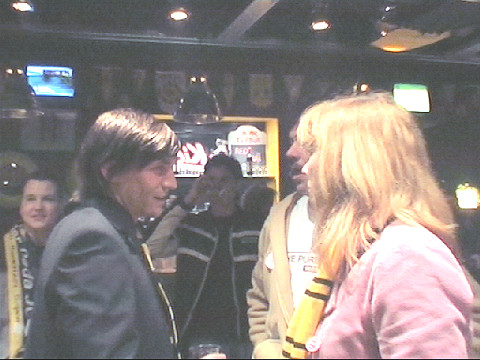
De media spreken van een "prestatie-contract" maar Kevin zelf zegt hier helemaal
niks over gehoord te hebben.
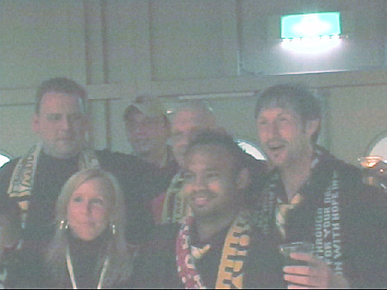
Vanwege de naderende Pasen was het niet zo druk als normaal, maar wel weer
zeer gezellig.
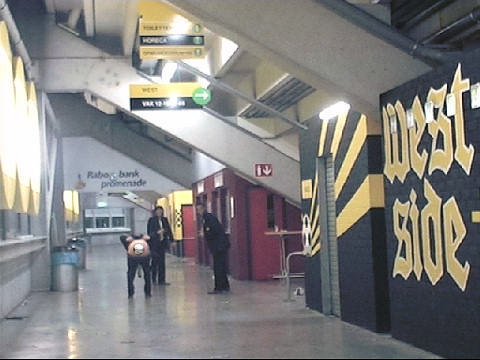
Sonya krijgt het weer allemaal klaar....
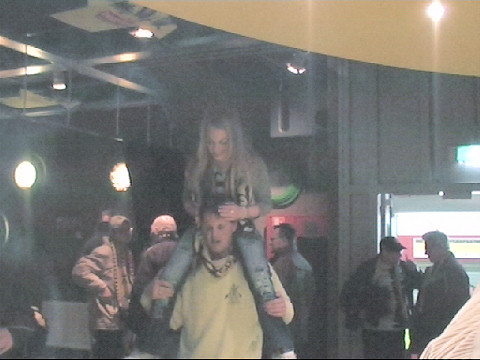
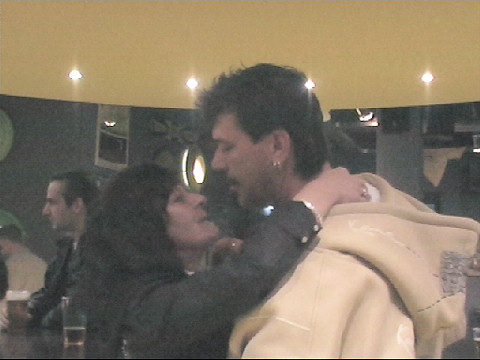
Het is lente, de gelukshormonen komen vrij!
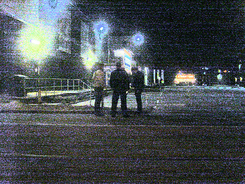
Geen gelukshormonen bij David die 75 euro mocht overhandigen aan oom agent
voor een plasje langs de wegkant.
Foto's vanuit Excelsior-perspectief
>>>
© Koempels Pleasure Dome
|